Welcome pages
Entries have been added to the Eclipse welcome pages for the AJDT help pages, cheat sheet, and examples.
AspectJ cheat sheet
A new cheat sheet has been included to help you get started with AspectJ. It can be accessed via Help > Cheat Sheets > AspectJ. If this feature is deemed useful, further cheat sheets may be added in future releases.
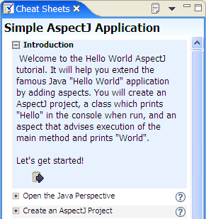
New format for build configurations
A better mechanism is now available for specifying which source files to compile, and to allow easy switching between multiple configurations. The existing .lst format is simply a list of files, whereas the new .ajproperties format allows more expressive declarations of which folders and files to include and an optional list of folders and files to exclude. Also, the standard properties file format used allows for improved integration with external tools like Ant.
Support is included for converting between .lst files and .ajproperties files. Also, the examples available via New > Other > AspectJ > AspectJ Examples have been updated to use these new configuration files.
Dynamic build configurations
Source files and packages can now be dynamically included and excluded from the current build configuration directly from the Package Explorer, simply by right-clicking on the appropriate resource and selecting the include or exclude menu options. Affected resources are decorated appropriately to show whether or not they are included.
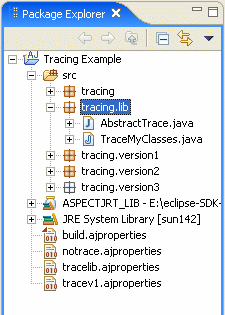
New build configuration editor
Associated with the new .ajproperties files (and replacing the old .lst file editor), this editor provides an alternative way of editing a build configuration. Unlike the menu options available from the Package Explorer, the editor can be used on any build configuration, not just the active one.
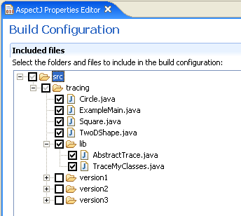
New AspectJ compiler preferences
A new AspectJ > Compiler preference page has been added, similar to the Java Compiler page.
The Style tab allows you to configure the AspectJ compiler settings for various coding issues which can either be ignored, or appear as warnings or errors in the Problems view.
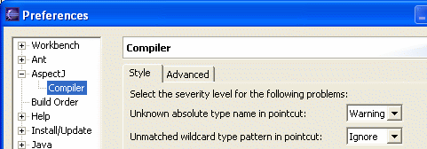
The Advanced tab allows additional options to be set in the compiler, with a brief explanation of each one.
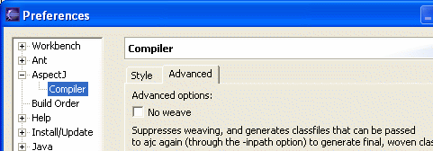
New icons
All of the icons across AJDT have been overhauled to bring the tools into line with Eclipse 3.0. The icons for pointcuts, advice, etc, have been redrawn in the Eclipse 3.0 style.
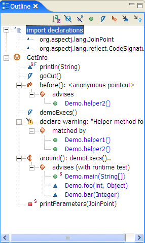
New gutter annotations
The gutter annotations have been completely overhauled. There are now different gutter annotations depending on the kind of advice (before/after/around) and these are marked with a '?' if there is a test that will be executed at runtime to determine whether the advice should run.
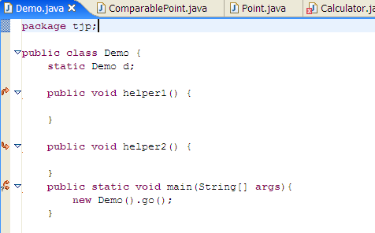
Warnings and errors resulting from declare warning/error statements have new icons to distinguish them from normal errors/warnings:
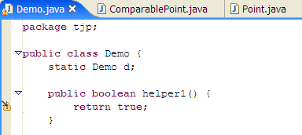
Inter-type declarations
Inter-type declarations now appear as gutter markers in the editor, and as stripes in the Visualiser.
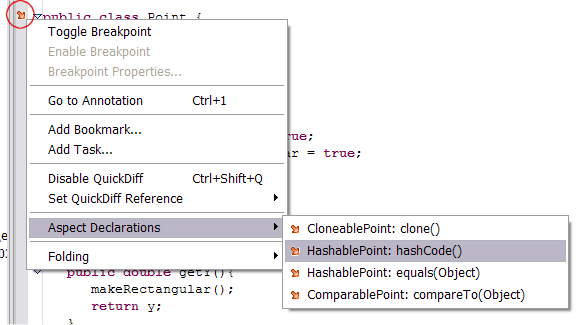
InPath and AspectPath
We now support the Eclipse approach for specifying these kinds of classpath entity, rather than requiring the user to enter a string. There are two new project properties pages for this.
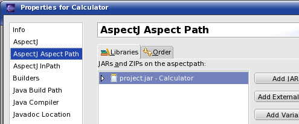
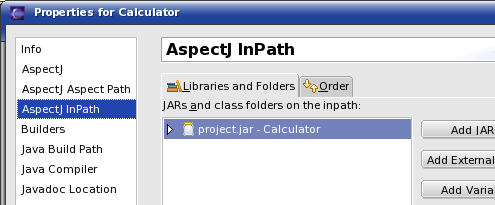
Weaving messages
There is a new AspectJ > Output weaving info messages option under properties for AspectJ projects. Setting this causes informational weaving messages to appear in the Problems view after the project has been built.
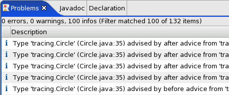
Improved support for plug-in projects
Converting a plug-in project to an AspectJ project will now automatically add the org.aspectj.ajde plug-in to your project's list of required plug-ins. Projects will no longer lose the AspectJ runtime library from the build path after asking PDE to automatically calculate it.
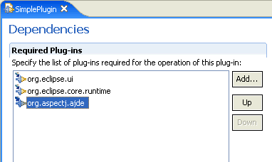
New extensible Visualiser
The Visualiser is now an extensible component with its own extension points defined if you want to visualize your own data. AJDT provides an extension that shows us the normal view that AJDT users expect to see, with a number of enhancements:
- New, clearer icons.
- Keyboard navigation, using the cursor keys or Tab and Shift-Tab keys to traverse stripes. F2 displays a stripe's tooltip, and pressing the space key opens an editor at the appropriate location.
- Integrated help system.
New visualisation options
The following options have been added to the Visualiser:
- Improved support for large projects, including more colours set by default in the menu, plus Select All and Select None actions.
- A new preferences page that allows configuration of minimum and maximum bar width and minimum stripe height.
- Optional demarcation between classes in the package view:
- Absolute proportions mode, where each line is at least the minimum stripe height, so that stripes cannot overlap each other. With this option disabled (the default), the bars may be compressed vertically to fit within the view, like this:
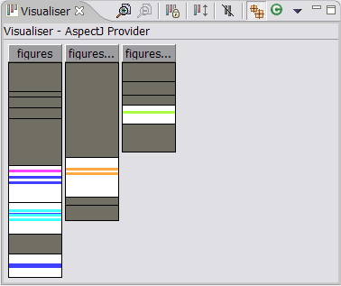
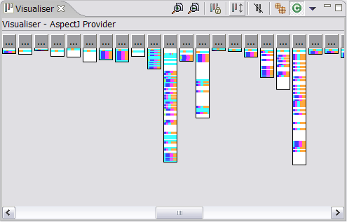
With absolute proportions enabled the bars are not compressed, and scrollbars are used if required:
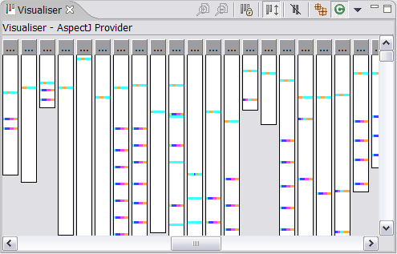
ajdoc wizard
The ajdoc tool is the AspectJ replacement for javadoc. There is a new wizard similar to the javadoc wizard which makes use of this tool. It can be accessed via the Project > Generate ajdoc... menu option.

Breakpoints in aspects
It is now possible to set breakpoints inside aspects. This can be done as usual by double-clicking the left-hand breakpoint ruler or by right-clicking the ruler and chosing the appropriate menu option. (Note: there is a limitation which means that in some cases breakpoints inside ‘around’ advice will not be triggered.)
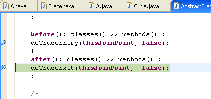